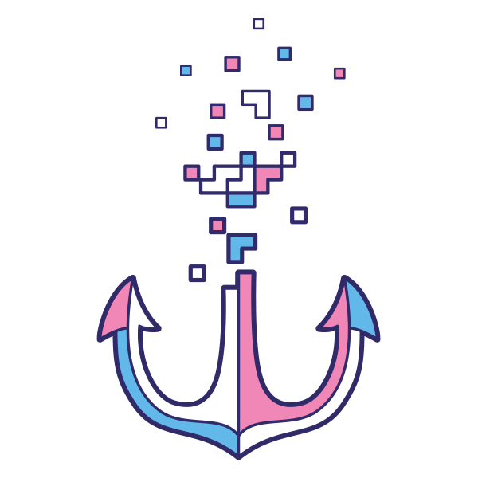
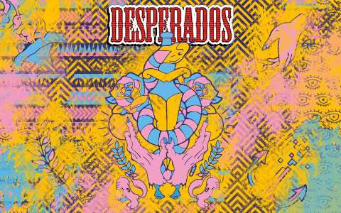

Desperados
(Student Project)
Inspiré par le collectif parisien 9e Concept, le but de ce projet était de créer une collection éphémère de bouteilles de bière Desperados. Influencé par l'univers du jour des morts au Mexique, le principe était de mélanger différent style d'illustration ensemble afin de créer un nouvel ensemble, un nouveau style.
-
Inspired by the Parisian collective 9e Concept, the goal of this project was to create an ephemeral collection of Desperados beer bottles. Drawn from the world of the Day of the Dead in Mexico, the principle was to mix different styles of illustration together in order to create a new whole, a new style.
Projet en collaboration avec Lou-Ann Coulon et David Fernandez

Recherches
- Research


Couleurs principales
- Main Colors
bleu
céruléenRVB 98 / 184 / 232
CMJN 60 / 10 / 0 / 0
Hexa #62B8E8
Pantone 299 C
rose
RVB 242 / 158 / 196
CMJN 0 / 50 / 0 / 0
Hexa #F29EC4
Pantone 223 C
bleu
nuitRVB 48 / 43 / 107
CMJN 100 / 100 / 30 / 0
Hexa #302B6B
Pantone 2758 C
bière
Motifs
- Patterns

Illustrations
- Illustrations


- 
Étiquettes
- Labels
- 
Bouteilles
- Bottles


 Back to Top
Back to Top